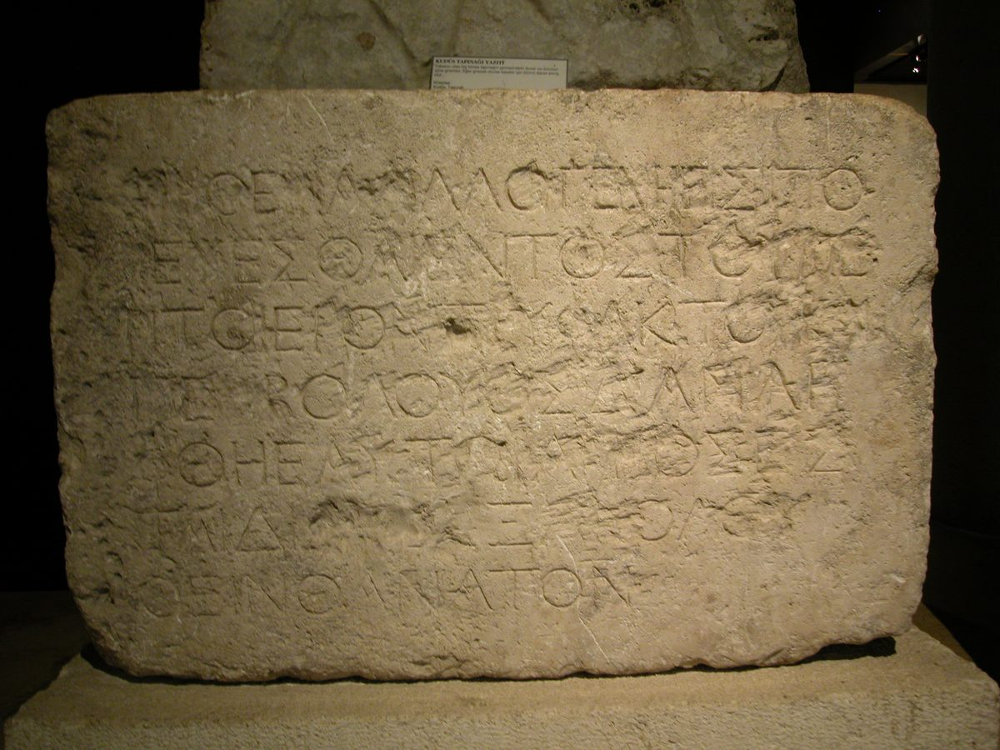

Efesios 2 — La Traducción Mister

⚠ Esta no es una imagen simbólica. Es el muro. Esta piedra exacta —una de las dos únicas copias recuperadas— estuvo en la balaustrada que separaba los atrios interiores del templo de Jerusalén del Atrio de los Gentiles exterior, la barrera a la que muy probablemente se refiere el «muro divisorio de la valla» de este capítulo. Su texto griego dice: ningún extranjero puede entrar dentro de la balaustrada y el recinto que rodea el santuario; el que sea sorprendido será responsable de su propia muerte, que seguirá. Descubierta en 1871 cerca de la Puerta de los Leones, ha estado en Estambúl desde que la autoridad otomana de antigüedades la reclamó bajo la ley vigente entonces; un segundo fragmento, más tosco, hallado en 1936, se quedó en Jerusalén y hoy está en el Museo de Israel.
Pablo casi con toda seguridad estuvo junto a una piedra como esta. Hechos 21:27-29 registra el motín que casi lo mata: una multitud supuso, equivocadamente, que había llevado a un compañero gentil más allá de esa línea exacta. Escribir a cristianos gentiles pocos años después que Cristo «derribó el muro divisorio» no es una metáfora elegida al azar: es la imagen físicamente más concreta de la que disponía, dirigida a lectores que quizá habían leído esta advertencia exacta con sus propios ojos en una visita a Jerusalén.
{kind=link}
Notas del traductor
⚠ «Muertos», y la palabra no se suaviza en ninguna parte de la frase que " "sigue. Nekrous —la palabra corriente para un cadáver—. Pablo no dice que " "los lectores estaban débiles, o enfermos, o perdidos; el diagnóstico es la muerte, y un " "cadáver no es algo que pueda mejorar desde dentro. Toda la gramática del pasaje depende de " "esto: el v. 4 no comienza con «así que os esforzasteis más» sino con «pero " "Dios» —la bisagra del capítulo, cuatro versículos de diagnóstico respondidos por dos " "palabras.
" "«El príncipe de la potestad del aire». Un título para el diablo que no " "aparece en ningún otro lugar del Nuevo Testamento en esta forma exacta. La cosmología antigua " "situaba comúnmente la atmósfera baja, entre la tierra y la luna, bajo potestades espirituales " "hostiles —una imagen física, no solo moral, de justo dónde son territorio disputado los " "«lugares celestiales» de 1:3. " "RV60 «el príncipe de la potestad del aire»; NVI se aparta del título y lee «el que gobierna los aires», " "perdiendo la palabra «príncipe» que ambos estantes en inglés conservan de un modo u " "otro.
" "⚠ «Por naturaleza hijos de ira». Physei, por naturaleza " "—no por elección, no por actos acumulados, sino como condición previa a cualquiera de " "ellos—. Esta sola palabra ha cargado con un peso enorme de teología posterior (es uno de los " "textos de prueba del pecado original, discutido por Agustín y Pelagio, por los reformadores y " "sus opositores), y esta biblioteca expone el peso en vez de resolverlo: el versículo declara " "una condición que Pablo dice universal («lo mismo que los demás») sin explicar su " "mecanismo.
⚠ «Pero Dios» —dos palabras que cargan todo el giro del capítulo. " "Ho de theos, situado justo donde la sintaxis de los vv. 1-3 parecía dirigirse hacia " "un verbo y un sujeto muriendo, sin respuesta, bajo su propio peso. Algunos predicadores han " "construido sermones enteros sobre esta sola frase; el griego se lo gana gramaticalmente, no " "solo retóricamente —los vv. 1-3 nunca completan su propia oración, y la acción de Dios en el " "v. 5 es lo que por fin aporta el verbo principal que faltaba.
" "«Nos dio vida juntamente con Cristo»… «nos resucitó»… «nos hizo sentar juntamente». " "Tres verbos, cada uno construido con syn-, «con» —synezōopoiēsen, " "synēgeiren, synekathisen— y cada uno describe algo que, gramaticalmente, ya " "ha sucedido (tiempo aoristo) a personas a quienes el capítulo acaba de llamar cadáveres. La " "resurrección y la entronización no son aquí esperanzas futuras: se reportan como ya " "consumadas, con Cristo, en las mismas tres etapas que siguió su propia historia: " "muerte, resurrección, sesión a la diestra.
" "«Por gracia sois salvos» aparece dos veces en este capítulo (aquí y en el " "v. 8) en idéntica construcción griega —un perfecto pasivo, una acción completada en el pasado " "con efecto continuo, no un proyecto en curso—. Interrumpe su propia oración las dos veces, " "apartada, casi murmurada, como si Pablo no pudiera avanzar tres cláusulas en este argumento " "sin volver a decirlo.
La frase más citada de la carta gira sobre una preposición en la que " "casi todas las traducciones coinciden y un pronombre en el que no. «Esto» (touto) es " "neutro; «gracia» y «fe» son ambas femeninas en griego, así que «esto» no puede referirse " "gramaticalmente de forma estrecha a ninguna de las dos por separado —apunta a todo el acto " "anterior de ser salvo por gracia por medio de la fe, no a la fe considerada como un logro " "privado que pudiera ser en sí misma una especie de obra—. La biblioteca lo señala porque " "buena parte del debate posterior ha girado sobre si la fe misma es el don que se nombra.
" "⚠ «Hechura». Poiēma —una cosa hecha, una obra de " "artesanía, y sí, el antepasado directo del español poema: una cosa compuesta, no " "simplemente ensamblada—. En el Nuevo Testamento solo se usa aquí y en Romanos 1:20, del mundo " "creado mismo. La misma palabra para lo que Dios hizo en seis días se usa aquí de lo que Dios " "hace de una persona. RV60 y NVI " "coinciden en «hechura», pero se separan al final del versículo: RV60 «para que anduviésemos " "en ellas», el mismo verbo de caminar que recorre toda la carta; NVI «a fin de que las " "pongamos en práctica», una imagen más de acción puntual que de vida entera.
" "No por obras… para buenas obras. El v. 9 cierra una puerta y el v. 10 " "abre otra con la palabra idéntica, erga, y la yuxtaposición es deliberada: la " "salvación enfáticamente no se gana con buenas obras, y con la misma fuerza es para " "ellas —un propósito declarado, no un pago exigido—.
«Incircuncisión»… «circuncisión». Ambas palabras en griego llevan la " "marca «los llamados» (legomenoi / legomenēs) —Pablo está nombrando un " "apodo y su apodo espejo, no respaldando ninguno de los dos como la base real de la " "distinción que está a punto de borrar—. Esta traducción conserva las comillas que el propio " "vocabulario griego aporta, donde varias versiones imprimen las etiquetas como si fueran " "descripciones neutrales.
" "⚠ Cuatro pérdidas, nombradas seguidas. Sin Cristo; alejados de la " "ciudadanía de Israel; ajenos a los pactos; sin esperanza y sin Dios. La lista no es relleno " "retórico —cada frase nombra una exclusión concreta y real que un gentil en Éfeso habría " "sentido con exactitud, en una ciudad donde la distinción entre ciudadano y extranjero era " "cuestión de derecho civil duro, no de sentimiento.
" "«Acercados por la sangre de Cristo». «Lejos» y «cerca» son términos " "rabínicos técnicos para gentil y judío, y Pablo volverá a citar ambos en el v. 17, haciendo " "eco de Isaías 57:19, «paz, paz al que está lejos y al que está cerca». La distancia que se " "cierra no es principalmente emocional: es la misma distancia de ciudadanía y pacto recién " "enumerada en el v. 12, cerrada por la misma sangre nombrada en 1:7.
⚠ «El muro divisorio de la valla» muy probablemente no es una metáfora " "sacada de la nada. Los atrios interiores del Templo de Herodes estaban separados del " "Atrio de los Gentiles exterior por una balaustrada de piedra llamada el soreg, " "marcada con piedras de advertencia inscritas en griego y latín: ningún extranjero puede " "entrar dentro de la balaustrada… el que sea sorprendido será responsable de su propia muerte, " "que seguirá. Dos de esas piedras reales han sido excavadas —una en 1871, hoy en el Museo " "Arqueológico de Estambul; otra en 1936, hoy en el Museo de Israel, Jerusalén—. Pablo, que casi " "pierde la vida en ese mismo templo por la acusación de haber llevado a un gentil más allá de " "esa barrera exacta (Hechos 21:28-29), escribe a una iglesia de mayoría gentil que Cristo ha " "derribado un muro que sus propios lectores quizá vieron con sus propios ojos, leyendo la " "advertencia.
" "«Un solo hombre nuevo». Kainon " "—nuevo en clase, no nuevo en el tiempo (neos), la misma distinción que esta " "biblioteca ha seguido desde Apocalipsis—. No una fusión de judío y gentil en una versión más " "grande de cualquiera de los dos, sino una tercera cosa que ninguno era antes.
" "«Dando muerte en sí mismo a la enemistad» (v. 16) y «él mismo es nuestra paz» (v. 14) " "enmarcan toda la unidad: la enemistad nombrada al principio, muerta en el centro, " "reemplazada por una paz predicada en persona (v. 17) a dos audiencias que antes no podían " "estar de pie en el mismo atrio del mismo edificio.
«Conciudadanos»… «miembros de la casa». Dos imágenes en un solo " "versículo, cívica y doméstica, ambas corrigiendo el «alejados… ajenos» del v. 12 punto por " "punto: ya no excluidos de la ciudadanía de Israel, sino ciudadanos; ya no ajenos a los " "pactos, sino familia.
" "⚠ «Piedra del ángulo» puede no significar lo que imagina un lector " "moderno. Akrogōniaios —literalmente «piedra-de-ángulo-más-alta»— se lee de " "dos maneras entre los historiadores de la arquitectura antigua: la piedra de cimiento " "colocada primero, en la esquina, que fija la alineación de dos muros; o la piedra clave que " "completa un arco o un hastial en lo alto, la última piedra colocada y no la primera. Ambas " "lecturas se conectan con el mismo texto del Antiguo Testamento detrás de esta palabra, «la " "piedra que desecharon los edificadores ha venido a ser cabeza del ángulo» (Salmo 118:22, " "citado de nuevo en 1 Pedro 2:6-7).
" "El edificio no está terminado. «Va creciendo» (v. 21) y «sois juntamente " "edificados» (v. 22) están ambos en presente, acción en curso, no una estructura completa " "descrita después del hecho. El templo con el que termina este capítulo sigue en " "construcción, y los lectores no son espectadores de él, sino material que se le va " "añadiendo.
Patrones que conviene seguir
Dónde esta traducción conserva las palabras exactas / distintas: «muertos» para nekrous (v. 1), la palabra de cadáver conservada sin suavizar, ya que todo el argumento del capítulo depende de que el diagnóstico sea total; «hechura» para poiēma (v. 10), la palabra detrás del español «poema»; las comillas conservadas alrededor de «incircuncisión» y «circuncisión» (v. 11), ya que el propio griego marca ambas como apodos y no como descripciones neutrales; «muro divisorio de la valla» (v. 14), conservado concreto en vez de abstraído en una metáfora general del prejuicio; «un solo hombre nuevo» (v. 15), kainon y no neos, nuevo en clase y no meramente en el tiempo; y «piedra del ángulo» para akrogōniaios (v. 20), señalada en vez de resuelta entre las lecturas de piedra de cimiento y piedra clave.
Ecos ya pagados. «Por gracia sois salvos» (v. 5), el paréntesis interrumpido que el capítulo 1 ya venía preparando a lo largo de su frase inicial de doscientas palabras; la redención por su sangre de 1:7, ahora la sangre que acerca a los que estaban lejos (v. 13); y el poder medido por la resurrección, la vara que 1:19-20 fijó con la propia resurrección de Cristo, ahora aplicada a los propios lectores —«estabais muertos… Dios os dio vida juntamente con Cristo».
Ecos plantados. La casa de Dios y el templo todavía en construcción (vv. 19-22), una imagen a la que esta carta volverá para el matrimonio y la armadura de Dios; el hombre nuevo (v. 15), que el capítulo 3 llamará el misterio ya plenamente revelado; y la paz predicada a los lejanos y a los cercanos (v. 17), que se remonta a las propias palabras de Isaías para las mismas dos audiencias.
A continuación en esta carta: Efesios 3 —Pablo, prisionero por los gentiles, y el misterio nombrado pero todavía no explicado en el capítulo 2 recibe por fin su contenido; la razón por la que puede orar con confianza a pesar de sus cadenas; y una oración por poder para comprender un amor que, dice, sobrepasa el conocimiento.